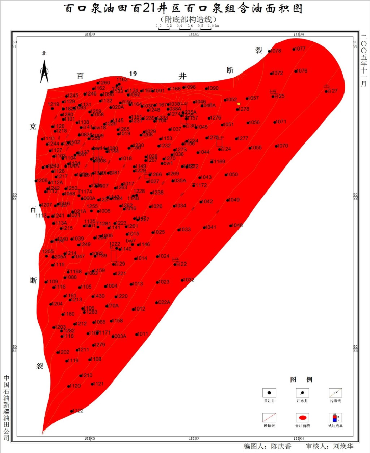

百21井区块三叠系百口泉组断裂发育，油藏西部、北部分别受克-百断裂、百19井断裂控制，区内又发育了一系列近东西走向的小断层，其中百60井断裂、百63井南断裂、百23井南断裂将该区划分为4个断块，即百17井断块、百23井断块、百204井断块和百202井断块。
百21井区块三叠系百口泉组断裂发育，油藏西部、北部分别受克-百断裂、百19井断裂控制，区内又发育了一系列近东西走向的小断层，其中百60井断裂、百63井南...

储层岩性较粗，主要为灰褐色小砾岩、砂砾岩、中粗砾岩。岩石颗粒成分以岩屑为主，长石、石英次之，岩石成分成熟度低。砾岩中砾石成分含量在30.0%～92.0%，平均为72.46%；砂质成分含量在2.0%～70.0%，平均为22.05%；填隙物含量在1.0%～15.0%，平均为5.49%。砂岩石英含量在5.5%～38.0%，平均为8.24%；长石含量在1.8%～47.5%，平均为6.75%；岩屑含量在42.0%～85.0%，平均为77.98%，填隙物含量在2.0%～25.0%，平均为7.03%。
储层岩性较粗，主要为灰褐色小砾岩、砂砾岩、中粗砾岩。岩石颗粒成分以岩屑为主，长石、石英次之，岩石成分成熟度低。砾岩中砾石成分含量在30.0%～92.0%，平均为72.46%；砂质成分含量在2.0%～70.0%，平均为22.05%；填隙物含量在1.0%～15.0%，平均...

不同断块油藏具有不同的油水界面，从南向北不同断块油水界面海拔依次降低，其中百17井断块油水界面海拔参照原探明储量报告-2020.0m确定；百23井断块油水界面海拔由百23井百口泉组试油出水段射孔顶界海拔-2044.6m确定；百204井断块油水界面由b20062井百口泉组试油油水同层段测井解释油层底界海拔-2080.3m；百202井断块试油未见水，其东北部的百201井在百口泉组试油为干层，认为其东北部及东部受岩性控制。油藏整体上属于受断裂控制的岩性-构造油藏。
不同断块油藏具有不同的油水界面，从南向北不同断块油水界面海拔依次降低，其中百17井断块油水界面海拔参照原探明储量报告-2020.0m确定；百23井断块油水界面海拔由百23井百口泉组试油出水段射孔顶界海拔-2044.6m确定；百204井断块油水界面由b20062井百口泉组试油油水同层段测井解释油层底界海拔-2080.3m；百202井断...